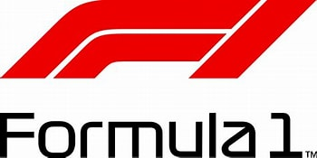
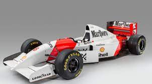
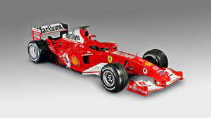
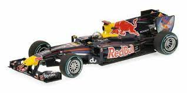
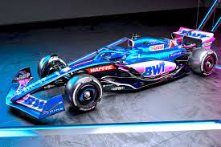

Índice
PresentaciónLa Formula 1 és el deporte rey dentro del mundo del motor desde su creación en 1950,
el primer Gran Premio se realizó el 13 de mayo de 1950 en el circuito de
Silverstone y
fue ganado por el italiano Giuseppe Farina,
consiguiendo además el campeonato de 1950 tras vencer a su compañero de equipo,
el argentino Juan Manuel Fangio.
En la Formula 1
a cada carrera se le denomina Gran Premio y el torneo que las agrupa es el
Campeonato Mundial de Fórmula 1.
La mayoría de los circuitos de carreras donde se celebran los Grandes Premios son autódromos,
aunque también se utilizan circuitos callejeros
(como el circuito urbano de Mónaco, uno de los mas conocidos del mundo del motor)
y anteriormente se utilizaron circuitos ruteros.
Los monoplazas de Formula 1 son vehiculos que siempre han incorporado los avances tecnológicos mas avanzados de su época,
siedo esto tanto a nivel de prestaciones o rendimiento como tambien a nivel de seguridad.




Aún así, a pesar de disponer de las máximas medidas de seguridad debemos tener en cuenta que esto es un deporte de riesgo,
lo cual ha desembocado en que a lo largo de los años hayan ocurrido graves accidentes siendo algunos de ellos fatales.
El más conocido de estos sería el del legendario piloto brasileño, y considerado uno de los mejores pilotos de la historia, Ayrton Senna
Las equipos dentro de la Formula 1 se denominan escuderias, dichas escuderias se forman por un selecto club de equipos de pilotos con licencia para disputar las carreras que componen el Mundial de F1.
La mayoría de estas escuderías están asociadas a grandes marcas del automóvil, aunque cada vez más están vinculadas a grandes patrocinadores que invierten fortunas para poder participar en la competicion.
Cada escudería compite en carrera con dos pilotos, y disponen de otros tantos pilotos probadores.
A partir de ahí, cada escudería dispone de un organigrama distinto, aunque todas cuentan con multitud de ingenieros, que realizan un trabajo casi tan importante como el de los pilotos.
Entre estas escuderias se encuentran grandes nombres como Ferrari,
Mercedes o
Williams.
Los pilotos son la base de la F1, sin ellos nada de esto es posible. Los pilotos de F1 deben ser superhumanos
preparados para resistir las duras condiociones que se viven dentro de un coche de F1 minetras buscan
expripmir al máximo el rendimiento de su máquina.
Llegar a la Formula 1 ya es complicado de por si, pero por si no fuese suficiente, ser exitoso en ella lo es aún mas.
Hasta la fecha solo 34 maestros de la conducción ha logrado el premio máximo y de esos un 47% a logrado repetir la ansiada hazaña por lo menos una vez.
Entre esos 34 hay otro escaso y a su vez subjetivo grupo de leyendas que serán recordados a lo largo de la historia,
un grupo de pilotos cuyos nombres nos vienen a la cabeza cuando escuchamos hablar de la Formula 1.
Bajo la humilde opinión de un servidor, los siguientes pilotos formarian parte de ese selecto grupo.
| Piloto | Titulos |
|---|---|
| Michael Schumacher | 7 |
| Lewis Hamilton | |
| Juan Manuel Fangio | 2 |
| Alain Prost | 4 |
| Sebastian Vettel | |
| Jack Brabham | 3 |
| Jackie Stewart | |
| Niki Lauda | |
| Nelson Piquet | |
| Ayrton Senna | |
| Alberto Ascari | 2 |
| Graham Hill | |
| Jim Clark | |
| Emerson Fittipaldi | |
| Mika Hakkinen | |
| Fernando Alonso |
Schumacher fue un piloto que revoluciono la F1, en su primera carrera, en la cual sustituia al piloto de la escuderia Jaguar
el alemán ya sorprendio a todos cuando logro clasificar en séptima posición con un coche muy inferior y superanado a su compañero
por una amplia diferencia.
En el dia de la carrera, logró pasar a 2 rivales en una sola curva pero debido a problemas de fiabilidad fue necesario retirar su coche de la carrera.
Ya con su asiento titular en el equipo Benetton (1991 - 1995), el alemán logro su priemera y única victoria en la temporada de 1992 junto con 8 podios, quedando por delante de Senna en el mundial
y firmando una gran temporada, en 1993 lograba otra gran temporada con 9 podios acabdo en cuarta posición en el mundial de pilotos.
Los comentaristas son una parte esencial de la Formula 1, sin ellos, una carrera no sería igual de emocionante, sin los comentaristas la fórmula 1 perdería una de las partes mas importantes de las que dispone, parte que normalmente es
menospreciado o no recibe el reconocimiento que merece.
Si hablamos de comentaristas españoles en la Formula 1, hay un nombre que se nos tiene que aparecer en la mente, Antonio Lobato Porras, o simplemente Lobato, és uno de los comentaristas mas reconocidos y definitivamente el
mas conocido en España. Su pasión por el deporte y su forma de vivirlo hace que sus narraciones te pongan la piel de gallina, recientemente, en el Gran Premio de Silvertone 2022, despues de que Carlos Sainz lograse la pole el dia anterior,
Lobato protagonizo una introducción que podría poner la piel de gallina a cualquier Español.
Xian Maceira Barca